九成在华欧盟企业受疫情影响“严重和中度”
原文链接 备份链接 参与中国欧盟商会与中国德国商会调研的577家企业中，大约一半预计2020年上半年营收会下跌超过10%，四分之一预计营收下滑超过20%。有46%的企业预计2020年的经营业绩将不及预期， …

作为仅次于美国的全球供应链中心、全球最大的制造业中心，中国制造能否应对疫情对供应链的冲击举世瞩目
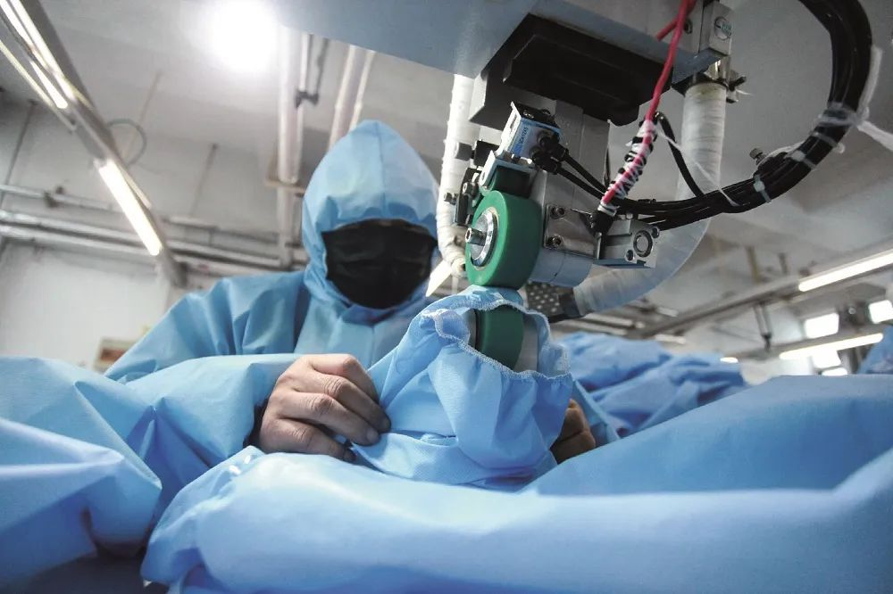
要点
1，复产难过复工，半数企业产能恢复不到6成，半数企业预计3月底完全恢复产能
2，企业需要“链式协同复工”，每个企业至少需要8个核心企业复工做支撑，目前多数企业的复工协同率仅在40%-60%之间
3，半数企业应对冲击的首选是加强研发，寻找新供应商、减少用工、提高自动化水平是排名第2、3、4位的应对选项
4，截至3月初，对企业供应链的冲击集中在国内，仅一成企业境外供应链受影响，但随疫情中心移至境外，境外供应链的影响面很快会扩大
5，全球制造业受到疫情影响后，会反向冲击中国制造业
6，企业最需要的五项政策是：减免税费、对厂房设备等固定成本提供补贴、减免利息、提供流动资金支持、提供防疫专项补贴
赵娟 陈琛 石勇 |文
开年之际，新型冠状病毒疫情迅速蔓延全国，成为中国解决中美贸易争端、实现脱贫攻坚和工业转型升级的最大挑战。中国作为全球供应链体系的关键参与者，正在从世界工厂向全球供应链中心转变，此次疫情成为牵动中国制造业供应链乃至全球供应链的核心事件。
随着疫情在全球范围内的扩散，供给不足将沿着产业链上下游传导，加快中国乃至全球供应链的变化与重组。为有效评估本次疫情对中国制造业供应链的影响，机械工业信息研究院机工智库联合德国弗戈传播集团、财经十一人开展问卷调研，截至3月4日共获得679家制造业企业的积极反馈，本文以此次调研为基础，希望通过科学分析来搞清楚疫情之下企业的复工复产供应链状况，并探讨应对之策。
中国已是仅次于美国的全球供应链中心
近年来，作为全球唯一拥有所有工业门类制造能力的国家，中国在全球供应链中的重要性大幅提升，已在诸多价值链中占据规模主导地位。
一方面，全球供应链中中国占比全球产出份额由2000年的平均6%提高到2018年的30%以上；另一方面，电子、计算机、通信设备等知识密集型和资本密集型的产品作为主要的全球供应链产品，已经开始成为中国产业增值的主力军（OECD贸易增加值数据库）。
世界银行在《2019年全球价值链发展报告》中的分析指出：“全球价值链贸易网络在2000年至2017年间发生了显著的结构性变化，中国取代了日本和美国的部分地位，成为全球第二大供给中心，无论是从附加值出口的规模，还是从与其它国家的紧密联系的数量来看，都是如此”（如图1所示）。
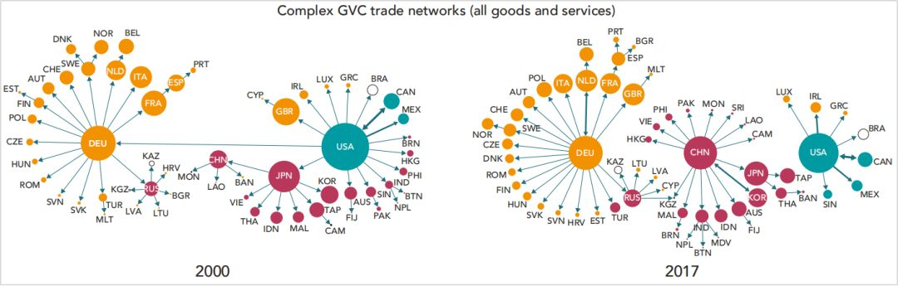
图1 全球贸易网络中中国作为贸易供给中心的地位越来越重要
不管是从全球供应网络还是从贸易增值视角出发（如图2所示），此次疫情所带来的对于国内乃至全球供应链冲击不容忽视。
一方面，国内制造企业推迟复工复产、人员不足、资金短缺、物流受阻等所造成产能的下降，使得对上游原材料的需求下降，导致供应链前端的企业受到冲击；随着产能供给不足，下游中间品的渠道受阻，供应链后端也会由于缺少原材料而受到冲击；另一方面，随着疫情在全球范围内扩散的加重，这些问题将通过全球供应链网络倍增放大，对全球制造业带来极大负面影响，并反向冲击中国制造业。
3月2日，经合组织（OECD）已将2020年世界经济增长预期从2.9%下调至2.4%，并进一步表示，“若疫情在欧洲和北美广泛传播，全球经济增长预期将可能进一步降至1.5%”。

图2 中国和主要伙伴的贸易增值流动（计算机、电子、电子设备）-左、经济增长预期-右
疫情对国内制造业供应链的五大冲击
八成企业已实现复工，且以小型民营企业为主。截至3月4日，82.98%的企业已完成部分复工，1.4%的企业未受疫情影响保持连续生产，7.92%的企业计划3月中旬前后复工，7.69%的企业尚未有具体复工计划。其中，未停工企业中以大型国有企业为主，已复工企业中以小型、大型民营企业为主，未复工企业中以微型民营企业为主；此外，电子信息工业企业实现复工比例最高为97.22%，其次是汽车企业为85%（如图5所示）。
造成企业暂未完全复工或暂无计划复工的原因主要有以下几点：一是配套企业尚未开工，客户需求降低；二是物流交通尚未恢复，多数员工无法到岗且口罩、温度计等防疫物资匮乏；三是上游原材料供给不足且企业自身库存消耗殆尽被迫停产；四是市场整体暂未恢复，供应链断流，且多数企业面临资金短缺（一般企业账面流动资金控制在1-3个月）和融资困境；五是企业所在地区疫情相关政策信息尚不明朗，且政府开工审批手续繁琐（如图9右，仅7.93%的企业表示相关手续对企业复工复产造成严重拖延）。
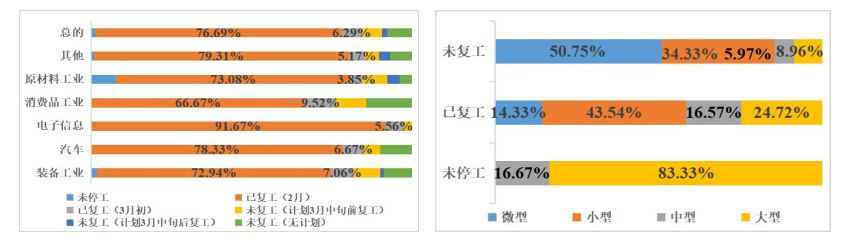
图5 截至3月4日企业复工情况（左）和不同规模企业复工情况（右）
仅两成企业产能恢复在80%以上，且以装备企业为主。截至3月4日，22.38%的企业产能恢复在80%以上，28.21%的企业产能恢复在60%-80%之间，49.42%的企业产能恢复在60%以下，其中，原材料工业企业的产能恢复主要集中在60%-80%之间，装备、汽车、电子、消费品工业企业的产能恢复主要集中在40%-80%之间（如图6左所示）。纵向来看，产能恢复80%以上企业中装备工业企业居多，占比为39.58%；汽车工业次之，占比14%（如图6右所示）。
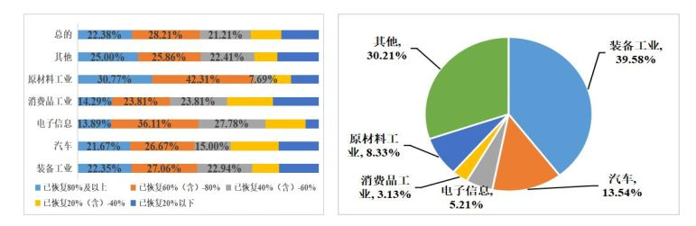
图6 截至3月4日企业产能恢复情况（左）和产能恢复80%以上行业占比（右）
五成企业预计3月底之前产能完全恢复。参与调研企业中，60.14%的企业预计在3月底产能能恢复到80%以，49.42%的企业预计3月底前产能完全恢复（如图7所示），其中，汽车工业复杂度高，整车组装的及时生产特性也带来了零部件低库存的特征，且汽车零部件的短期替代性弱，区域性零部件供应不足直接导致汽车主机厂产能恢复受阻并面临停产风险，其预计3月底能实现产能完全恢复的企业占比仅为40%，远低于其他行业。
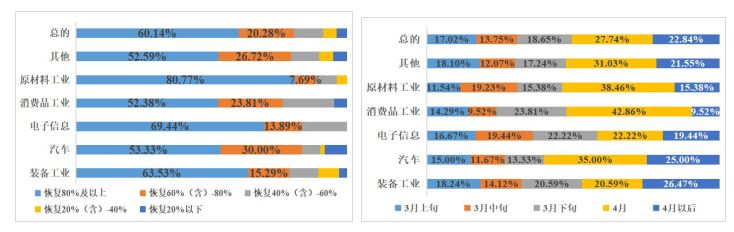
图7 3月底企业产能预计恢复情况（左）和企业产能预计完全恢复情况（右）
外部压力阻碍企业全面复工。参与调研企业表示，83.22%的复工压力源于企业外部，仅16.78%的复工压力源于企业内部（如图8左所示）。同时，60.14%的企业表示其所在地方政府针对本次疫情防控以及企业复工复产已出具精准的落地指示以及相关政策措施支撑，对企业复工复产没有造成拖延；仅7.93%的企业表示相关手续对企业复工复产造成严重拖延，这部分企业主要集中于湖北、广东、江苏、上海等疫情严重地区，出于对疫情的防控考虑，有关复工政策相对较严（如图8右所示）。

图8 企业复工压力来源（左）和企业所在地方政府复工批准手续便利性（右）
企业供应链、劳动力问题突出。参与调研企业普遍表示供应链出现问题是其所面临的最大外部压力，其次是市场未恢复情况下客户需求的大幅降低，交通物流成本的上升对于汽车、电子信息等主产区与主销区呈现分离的行业影响更为明显。同时，企业内部劳动力的短缺以及现金流、资金流的断裂对于企业完全复工也造成一定程度的掣肘，其中，包括机床行业在内的装备工业领域受现金流的影响更甚（如图9所示）。
机床协会相关负责人接受调研表示：“目前机床行业经营非常困难，面临着严重的供应链断流、招工不足、流动资金短缺等问题，部分企业虽暂时转而生产口罩等防疫物资，但由于机床所涉领域繁多，所谓牵一发而动全身，一旦一个企业出现问题，对于整体机床行业将是一系列连锁反应，很多企业将面临破产风险”。
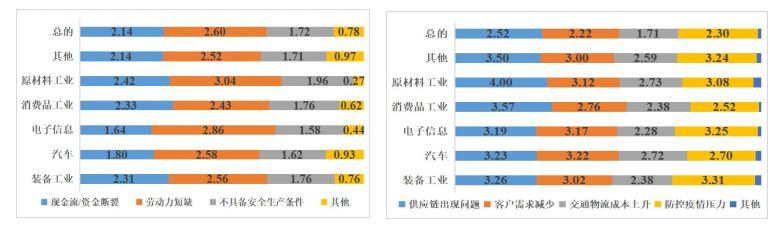
图9 企业内部复工压力大小（左）和企业外部复工压力大小（右）
疫情对供应链关键材料和零部件供应影响严重。参与调研企业中，35.20%的企业表示其关键材料和零部件的供货速度和价值均受到影响，但问题不大；29.14%的企业表示其关键材料和零部件的供货速度和价格均受到严重影响；23.08%的企业表示其部分材料和零部件出现断供（如图10、11左所示），且电子信息、装备工业、原材料工业、汽车领域出现断供企业占比分别达到33.33%、27.06%、26.92%和18.33%（如图10右所示）。
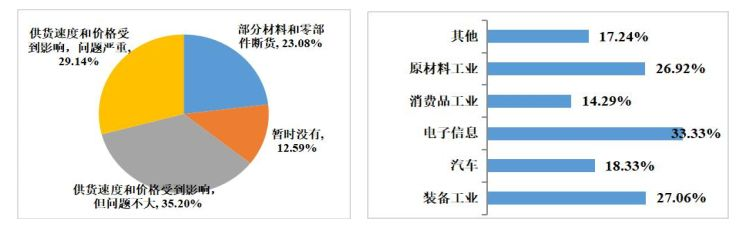
图10 供应链关键材料和零部件供应情况（左）和各行业关键材料和零部件断供占比情况（右）
企业通过与供应商协作来应对供应链各环节断流压力。参与调研企业普遍表示其供应链各个环节均面临一定程度的断流压力，不管是在上游的关键材料和零部件、下游客户企业生产、周边配套企业加工，还是运输服务等生产性服务业均出现一定程度中断，且各种物料成本和加工成本均出现不同程度的上浮（如图11左所示）。
为应对供应链中断所带来的企业经营受阻问题，有44.76%的企业选择配合或帮助合作供应商恢复生产，19.11%的企业选择寻找新的供应商，仅2.56%的有相关生产能力的企业选择自己生产，33.57%的企业选择等待，对于选择寻找新的供应商或是等待的企业来说，其所面临的经营风险具有更大的不确定性（如图11右所示）。
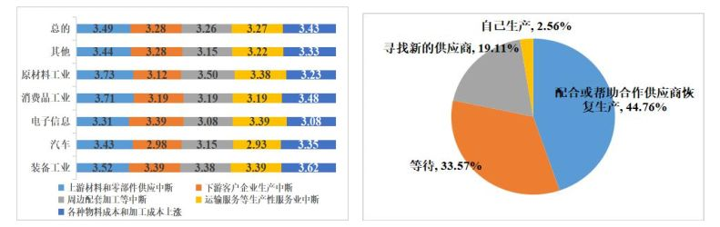
图11 供应链角度企业困难大小（左）和企业应对供应链问题措施（右）
平均8家核心供应商决定企业“链式协同复工”。截至3月4日，企业复工过程中受影响的核心供应商数量在10个以内的企业占比为70.33%，受影响的核心供应商数量在10-30个的企业占比为21.96%（如图12左所示）。疫情当前，企业复工不仅取决于其自身的有效措施，还要以其供应商为支撑，调研结果说明，“链式协同复工”过程中每个企业至少需要8个核心企业复工做支撑。

图12 影响企业供应链的核心供应商数量（左）和企业配套企业复工情况（右）
配套企业复工和产能恢复高度承压。截至3月4日，仅一成配套企业实现80%的复工率，多数配套企业复工率集中在40%-60%之间（如图12右所示）。从产业链角度来看，接受调研企业的配套企业中，仅44.05%的上游配套企业实现产能恢复六成以上，仅41.49%的下游配套企业实现产能恢复六成以上（如图13所示）。故从产业链的角度来看，调研企业的有效复工水平仍然不高。
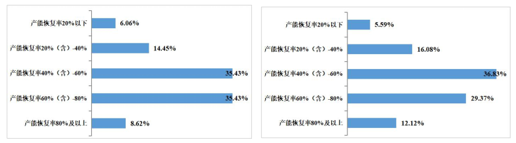
图13 企业产业链上游配套企业产能恢复情况（左）和企业产业链下游配套企业产能恢复情况（右）
疫情冲击以国内供应链为主。参与调研企业中，72.03%的企业位于境内（湖北以外）的供应链受到疫情冲击，18.41%的企业位于湖北的供应链受到疫情冲击，仅9.56%的企业位于境外的供应链受到疫情冲击。
但是，疫情中心已从境内移至境外。2月27日，中国境外新增确诊病例首次超过中国境内；3月17日，中国境外死亡病例与确诊病例首次超过中国境内，疫情席卷全球六大洲，中国企业的境外供应链很快就会受到严重冲击。
国内供应链中，相对其他行业，电子信息、原材料工业企业位于国外的供应链受疫情冲击较大，分别达到22.22%和15.38%；同时，电子信息、装备制造、汽车工业企业位于湖北地区的供应链受疫情冲击较大，分别达到25%、16.47%和15%（如图14所示）。
究其原因，湖北作为中国四大汽车生产基地，坐拥东风本田、神龙汽车、东风乘用车等10家整车厂，产能占比中国汽车总产能的8.8%，而且聚集了诸如TCL华星、天马微电子、京东方的工厂，作为本次疫情重镇，其主导产业供应链所受冲击不容忽视。

图14 疫情对企业供应链的冲击范围
供应链冲击下多数企业经营仅能勉强维持。参与调研企业中，仅5.29%的企业生产经营尚未受到影响，42.66%的企业受到较大影响勉强维持经营，3.73%的企业受到严重影响且可能破产倒闭（如图15左所示），其中，上游原材料工业面临较大倒闭风险，相关企业占比为7.69%；
相对其他行业，汽车、装备工业整体生产经营风险较大。此外，从企业生产物料储备来看，多数企业仅能维持1-3个月，且26.67%的汽车企业的相关物料储备仅能维持2周-1个月时间，在国内疫情初步得到控制下，企业生产经营是否好转还需进一步重点关注国外疫情发展态势以及世界经济对国内的反向冲击（如图15右所示）。

图15 疫情冲击下企业生产经营情况（左）和企业生产物料储备情况（右）
**企业的应对之道和政策需求
**
为打赢这场战役，参与调研企业普遍“多措并举”积极应对本次疫情冲击，49.42%的企业选择加强技术研发，始终坚持“科技是第一生产力”；44.76%的企业选择对接新的供应商，来应对本次疫情对供应链的影响；40.56%的企业选择减少用工需求，来降低企业成本压力；
38.93%的企业选择提高生产过程中的自动化水平，不管是通过加强互联网协同制造，还是投入智能化、自动化设备，从提高生产现场力来强化生产运营效率。其中，原材料工业（46.15%）、电子信息工业（44.44%）以及装备工业（43.53%）选择提高自动化生产水平的企业占比高于总体水平；
24.94%的企业选择寻找新的业务，诸如生产医疗防疫物资，其中，原材料工业、电子信息工业由于其行业特性，转向生产医疗防疫物资的企业比例较高，分别占到30.77%和30.56%（如图16左所示）。
此外，接受调研企业中选择提高生产过程中自动化水平的主要以大中型为主，分别占比大、中型企业数量的52.53%和48.44%。（如图16右所示）。

图16 疫情冲击下企业应对措施（左）和不同规模企业选择自动化应对占比（右）
疫情冲击下，多数制造业企业面临供应链断流、生产物料库存不足、现金流短缺、运输物流成本上升、防疫压力倍增、市场灰度不足、客户需求下降等多重困境。从政策需求角度出发，本次调研从不同角度征询了企业对于相关政策的迫切性，并对相关政策措施作了排序。
排名前五的政策需求依次为减免税费、厂房设备等成本补贴、减免利息、提供资金流动性支持以及提供防疫专项补贴（如图17所示）。
目前，不管是财政部预拨疫情防控补助资金、央行进行LPR降息操作以及发放首批专项再贷款、全国人大常委会阶段性减免企业社保费和实施企业缓缴住房公积金政策，还是税务总局发布的《新冠肺炎疫情防控税收优惠政策指引》等政策措施，都在很大程度上覆盖了企业的相关需求，为企业保驾护航赢战疫。
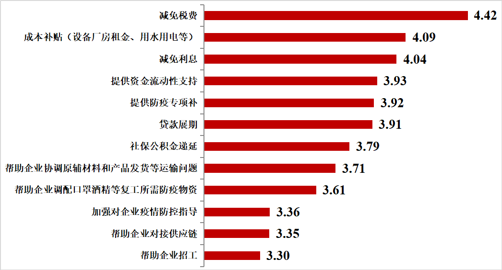
图17 企业政策需求
调研范围覆盖26个省（市）、5大行业领域。本次参与调研企业共计679家，分布于上海（15.38%）、江苏（14.69%）、广东（14.69%）、浙江（9.09%）、山东（7.46%）、北京（5.13%）、河北（3.73%）、天津（3.5%）等26个省（市），且主要集中于长三角、粤港澳和京津冀地区（如图3左所示），所涉行业领域包括装备工业（40%）、汽车工业（14%）、电子信息工业（8%）、原材料工业（6%）、消费品工业（5%）以及其他工业（27%），其他工业包括造纸、家电、医药、化工、纺织等（如图3右所示）。

图3 参与调研企业区域分布图（左）及行业分布图（右）
调研企业以大型、小型民营企业为主。参与调研企业中，大型、中型、小型、微型企业分别占比为23.08%、15.14%、42.07%和19.71%，且以民营企业为主，占比达到63%，外商投资企业次之占比18%（如图4所示）。
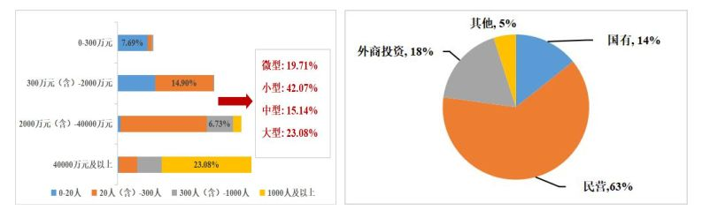
图4 参与调研企业规模（左）及类型（右）
作者为机械工业信息研究院（机工智库）研究员，感谢德国弗戈传播集团对本次调研的大力支持。编辑：马克


责编 | 黄端 duanhuang@caijing.com.cn

原文链接 备份链接 参与中国欧盟商会与中国德国商会调研的577家企业中，大约一半预计2020年上半年营收会下跌超过10%，四分之一预计营收下滑超过20%。有46%的企业预计2020年的经营业绩将不及预期， …
原文链接 备份链接 虽然受疫情影响巨大，但大宗原材料行业普遍预计疫情结束后的需求反弹将带动行业回暖 图/视觉中国 文 |《财经》记者 李斯洋 编辑 | 马克 新冠疫情给油气、煤炭、钢铁、有色金属等这些关乎国民经济命脉的大宗原材料价格造成 …
原文链接 备份链接 从2万/吨到40万/吨，短短一个多月的时间，口罩“心脏”熔喷布价格已经上涨近20倍。分析认为，熔喷布产能和口罩产能阶段性不匹配是涨价主因 文 |《财经》记者 杨秀红 张建锋 王颖 陆玲 | 编辑 被称为口罩“心脏”的 …
原文链接 备份链接 虽然受疫情影响巨大，但大宗原材料行业普遍预计疫情结束后的需求反弹将带动行业回暖 ****************************李斯洋 | 文**************************** …
原文链接 备份链接 尽管疫情影响到部分制造业零部件的加工生产，导致一些跨国公司生产中断，但并不会对供应链产生可以衡量的长期影响。中国30年打造的供应链，短期内无法被完全取代 供应链的脆弱让不少欧美业者考虑转移生产的可能。图/新华 文 |《 …